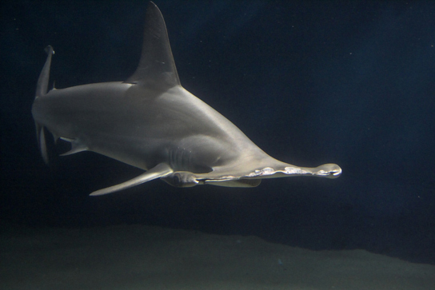

SECTION 14-2 · 软骨鱼纲 CHONDRICHTHYES
软骨鱼纲
软骨鱼纲全球约 846 种，海洋生活，是鱼类中较低等的一支。其最显著特征是 终生软骨（虽有钙盐沉着但并非真骨组织）。
软骨鱼纲主要特征：
- 骨骼：终生软骨，椎体中央小管和相邻椎体间空腔中残存 念珠状脊索；
- 口与鼻孔：口腹位，鼻孔腹位；
- 鳞片：体被 盾鳞（与齿同源）或光滑无鳞；
- 尾型：歪型尾；
- 鳃：每侧 5~7 个鳃裂 直接开口于体表（外鳃），或每侧 4 个鳃裂外被膜状鳃盖后具一总鳃孔（内鳃）；鳃弓后缘生有 发达的鳃间隔，一直延续到鳃丝端部甚至体表，其间有软骨条支持；
- 循环：有 动脉圆锥（能搏动），无鳔（"肺"）；
- 肠：具 螺旋瓣；泄殖腔有或无；
- 生殖：雄性具 鳍脚，体内受精，卵生/卵胎生/假胎生；
- 渗透调节：血液保留 尿素 调节渗透压，直肠腺排盐。
软骨鱼的软骨可能是次生性起源（由硬骨祖先退化而来），而非真正的原始软骨。出现于泥盆纪约3.7亿年前。

一、软骨鱼纲的分类
软骨鱼纲分为两个 亚纲：板鳃亚纲 和 全头亚纲。
软骨鱼纲分类
软骨鱼纲→
板鳃亚纲（鲨总目 + 鳐总目）
+
全头亚纲（银鲛）
"板鳃"指鳃间隔呈板状发达；"全头"指头骨完整愈合（上颌与颅骨愈合）。
（一）板鳃亚纲 Elasmobranchii
体呈纺锤形或扁平形，盾鳞。口大并横裂于头部 腹面，鳃裂 5~7 对 直接开口于体外；上颌不与颅愈合（故称"板鳃"）。雄性具鳍脚。有泄殖腔。
板鳃亚纲包括两个总目：
- 鲨总目（鲨形总目）：体呈 纺锤形，眼和鳃裂 侧位，胸鳍与头侧 不愈合。代表：各种鲨鱼（如猫鲨、角鲨、灰星鲨）。
- 鳐总目（鳐形总目）：体形 背腹扁平，鳃裂 腹位，胸鳍前缘与头侧 相连（呈盘状）。代表：各种鳐、魟、鲼。
区分口诀："鲨纺锤鳃侧位，鳐扁平鳃腹位"。考分类常给外形判总目。
（二）全头亚纲 Holocephali
代表动物为 银鲛（如黑线银鲛）。与板鳃亚纲的主要区别：
- 上颌与颅骨愈合（"全头"之意），故又称全头类；
- 鳃裂 4 对，外被一膜状 鳃盖，后具一总鳃孔（内鳃）；
- 无泄殖腔（肛门与泄殖孔分别开口）；
- 体光滑 无鳞；
- 雄性除鳍脚外，还具 腹前鳍脚（握鳍）及额部鳍脚。
全头亚纲有鳃盖、无泄殖腔、无鳞——这些特征与硬骨鱼相似，是软骨鱼中的"异类"，易考辨析。
| 特征 | 板鳃亚纲（鲨·鳐） | 全头亚纲（银鲛） |
|---|---|---|
| 体形 | 纺锤形或扁平 | 纺锤形 |
| 鳞片 | 盾鳞 | 无鳞（光滑） |
| 上颌 | 不与颅愈合 | 与颅愈合（全头） |
| 鳃裂 | 5~7 对，直接开口体外 | 4 对，外被膜状鳃盖 |
| 鳃 | 外鳃 | 内鳃 |
| 泄殖腔 | 有 | 无 |
| 雄性交配器 | 鳍脚 | 鳍脚 + 腹前鳍脚 + 额鳍脚 |
| 代表 | 猫鲨、灰星鲨、鳐、魟 | 黑线银鲛 |
二、软骨鱼的生殖方式（必考）
软骨鱼为 体内受精（雄性鳍脚插入雌性泄殖腔），其后代发育方式有三种：
- 卵生：体内受精后产卵体外发育（少数种类体外受精）。卵具厚角质卵壳（"美人鱼钱包"）。
- 卵胎生：绝大多数种类。卵在母体输卵管内发育，胚胎发育所需营养 完全由卵黄囊提供，与母体无营养联系。
- 假胎生：以 灰星鲨 为代表。前期靠卵黄囊营养，后期胚胎卵黄囊壁伸出许多褶皱嵌入母体子宫壁形成 卵黄囊胎盘，胎儿从母体血液获取营养完成发育。
软骨鱼对后代保护较好，产卵量少而后代成活率较高。
三种生殖方式递进：卵生→卵胎生(卵黄营养)→假胎生(卵黄囊胎盘)。假胎生=灰星鲨，必记代表动物。
三、软骨鱼的渗透压调节（特色）
海生软骨鱼血液中保留大量 尿素（含量可达血液的 2%~2.5%），使体液渗透压 略高于海水，水分自动由鳃渗入体内，无需饮水。
多余盐分通过两个途径排出：
- 肾脏：排出含尿素的稀尿；
- 直肠腺：软骨鱼特有器官，位于直肠末端，分泌高盐黏液排入直肠，随粪便排出体外。
直肠腺是软骨鱼排盐的特有器官，与硬骨鱼的泌氯腺（鳃上）形成对比，常考辨析。
四、软骨鱼的感觉器官（发达）
- 嗅觉：极发达，鲨鱼可嗅出稀释到 百万分之一 浓度的血液。
- 侧线系统：感知水流方向、速度、压力及微弱电场。
- 罗伦氏壶腹（电感受器）：鲨鱼头部特有的电感受器，可感知猎物肌肉收缩产生的微弱电场，是软骨鱼的高级感觉器官。
- 视觉：晶状体靠后，适远视；无眼睑。
罗伦氏壶腹是软骨鱼特有电感受器，常作为软骨鱼的感觉器官拓展考点。
软骨鱼纲核心记忆点
- 软骨鱼 = 终生软骨 + 盾鳞 + 歪尾 + 鳃裂外露(外鳃) + 鳃间隔发达 + 无鳔 + 螺旋瓣肠 + 动脉圆锥 + 泄殖腔 + 鳍脚 + 体内受精。
- 分类两亚纲：板鳃亚纲（鲨总目=纺锤鳃侧位；鳐总目=扁平鳃腹位）；全头亚纲（银鲛，上颌与颅愈合，有鳃盖，无泄殖腔，无鳞）。
- 生殖三式：卵生→卵胎生(卵黄营养)→假胎生(灰星鲨，卵黄囊胎盘)。
- 渗透调节：保留尿素使体液高于海水 + 直肠腺排盐（特有）。
- 浮力：无鳔，靠肝脏鲨烯。
- 代表动物：猫鲨、灰星鲨、角鲨、鳐、魟、黑线银鲛。